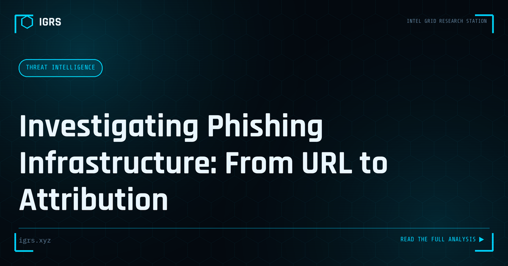

Investigating Phishing Infrastructure: From URL to Attribution
| File No. | IGRS-027/2026 |
| Subject | OSINT and technical methodology for phishing infrastructure analysis and threat actor attribution |
| Category | Threat Intelligence |
| Author | Manuj Kumar Pandey |
| Published | 2026-05-11 |
| Reading time | 12 minutes |
A phishing URL is just the entry point. The infrastructure behind it reveals the threat actor's patterns, tooling, and often their identity. How to investigate systematically.
Investigating Phishing Infrastructure
Behind every phishing campaign is infrastructure — domains, hosting, email systems, and tools that attackers use to deceive victims. Investigating this infrastructure reveals the scope of a campaign, links related attacks, and supports takedown and attribution. For Indian investigators and security teams, phishing infrastructure investigation turns a single phishing email into a map of the attacker's operation. This guide explains the methodology.
Components of Phishing Infrastructure
| Component | Investigative Value |
|---|---|
| Phishing domains | Registration, hosting, related sites |
| Hosting servers | Other malicious sites, attribution |
| Email infrastructure | Sending patterns, spoofing methods |
| SSL certificates | Linking related domains |
| Phishing kits | Tools, author, campaign links |
Starting from the Phishing URL
Investigation typically begins with a phishing URL or domain. Analysing the domain reveals its registration details through WHOIS, its hosting through DNS and IP lookups, and its creation date, which often coincides with the campaign launch. Newly registered domains mimicking legitimate brands are a hallmark of phishing. From this starting point, the investigation pivots outward to related infrastructure.
Pivoting Through Infrastructure
The power of infrastructure investigation lies in pivoting. Shared hosting IPs reveal other domains on the same server, which may be part of the same campaign. Shared registration details, name servers, or SSL certificates link related domains. Passive DNS history shows how infrastructure has changed over time. By following these connections, investigators expand from one phishing domain to the broader infrastructure behind a campaign, revealing its true scope.
SSL Certificate Analysis
SSL certificates are a valuable pivot point. Certificate transparency logs record certificates issued for domains, and analysing them reveals related domains sharing certificate characteristics, newly issued certificates for phishing domains, and patterns linking infrastructure. Tools that search certificate transparency logs allow investigators to discover phishing domains as they are set up, sometimes before campaigns launch, and to link domains that share certificate features.
Analysing Phishing Kits
Phishing kits — the packaged code attackers deploy to create phishing pages — contain valuable intelligence. Examining a kit can reveal where harvested credentials are sent (often exposing the attacker's collection email or server), the kit's author through code artifacts, and links to other campaigns using the same kit. This analysis can directly support attribution and reveal the broader operation behind a phishing page.
Supporting Takedown and Reporting
Investigation supports action against phishing infrastructure. Identifying the hosting provider and registrar enables abuse reports and takedown requests. Documenting the infrastructure supports law enforcement action and, in India, reporting to CERT-In and cybercrime.gov.in. For organisations targeted by phishing impersonating their brand, infrastructure investigation also informs defensive measures and customer warnings.
Building Investigation Capability
For Indian investigators, phishing infrastructure investigation is a high-value OSINT skill that transforms isolated phishing reports into actionable intelligence about attacker operations. By starting from a phishing URL and pivoting through hosting, registration, certificates, and kits, investigators map campaigns, link related attacks, and support takedown and attribution. As phishing remains the most common attack vector against Indian organisations and citizens, the ability to investigate the infrastructure behind it — turning a single deceptive email into a comprehensive picture of the threat — is an increasingly essential capability for security teams and law enforcement alike.